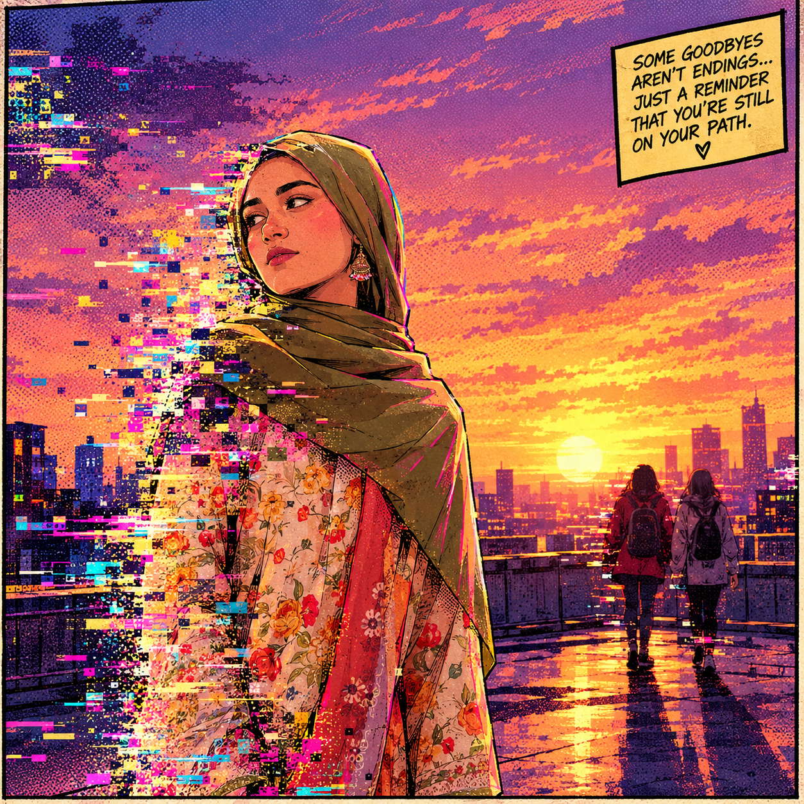

THE SPIDER-FILES
// glitch_dimension_travel.log // ENTRY_03 // signal: RESOLVING
The thing hunting my tear in the canon finally caught up with us: a creature made of pure corrupted static, unraveling whole city blocks into flat gray noise wherever it stepped. Miles called it "The Buffer." Gwen just called it "ugly." Both were right.
By then, I'd finally learned to control my glitch — not as a flaw, but as a tool. Instead of freezing by accident, I could freeze on purpose, locking whole seconds of the Buffer's static in place like pausing a broken video. Miles bought us time with web-lines; Gwen shattered the creature's outer shell with her hammer; and I sealed the tear I'd torn open on day one, frame by flickering frame, with my own hands.

We won — the Buffer dissolved back into harmless static, and Brooklyn's skyline stopped flickering. But sealing the tear meant closing the door I'd fallen through, too. Miles offered me a spot in the Spider-Society on the spot. Gwen just said, "You'd be good at this."
I said yes. Not because my old world didn't matter — it does, more than ever — but because I finally understood what the glitch in me had been trying to tell me all along: I didn't fall into this universe by accident. I belonged in it. So I stayed, suit stitched from broken screens and all, the newest member of a team that spans every universe there is.
END OF LOG — SIGNAL: STABLE.